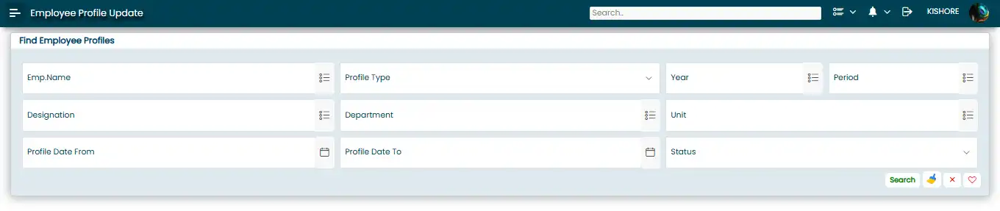
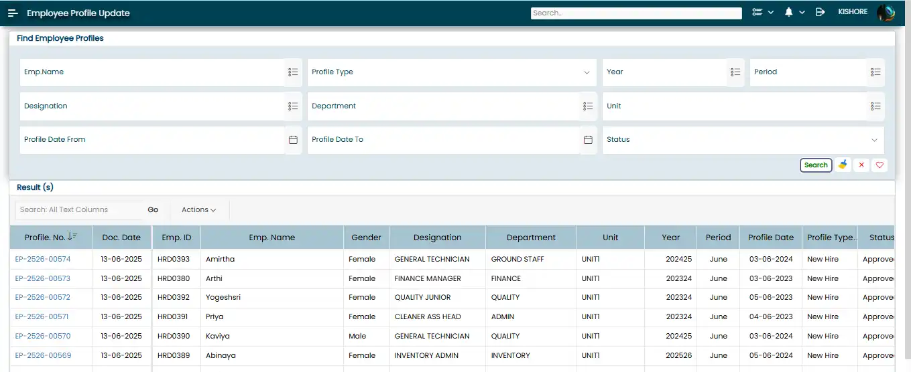
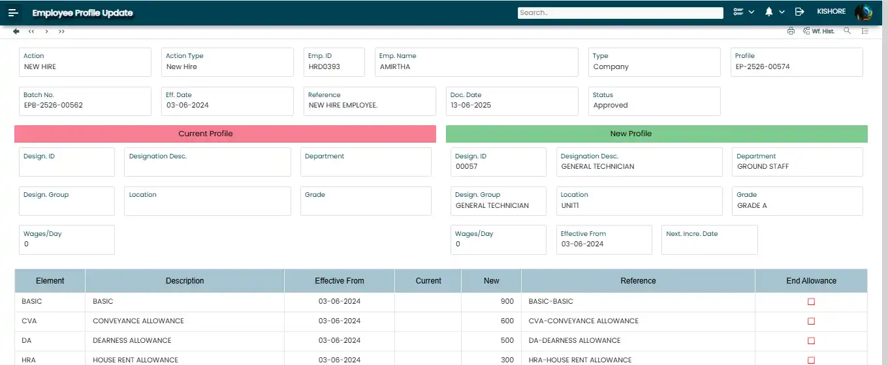

<div data-category="Payroll" data-title="Employee Profile Update" data-updated="December 01, 2025" data-contributors="RoadmapIT" data-breadcrumb="Home,Payroll,Employee Profile Update">
  <div class="page-content">
    <p>
      Employee Profile Update is the process of modifying an employee's personal information, such as contact details, job title, salary, tax details, or other relevant data within the payroll system, ensuring that the information used to calculate their pay is accurate and up-to-date whenever changes occur in their employment status.
    </p>
    <h5>Navigation path:</h5>
    <p class="fs-6">Payroll \ Transaction \ Employee Master \ Employee Profile Update</p>
    <!-- Employee Profile Update Search -->
    <h2>Employee Profile Update:</h2>
    
    <ul style="list-style-type: none; align-content: center">
      <li class="mouse-icon">Search screen displays the list of Employees with the relevant details.</li>
      <li class="mouse-icon">Click on search to filter all the records.</li>
      
      <li class="mouse-icon">User can filter the respective documents by entering the search parameters at the header.</li>
      <li class="mouse-icon">Using search, system displays the results relevant to the search parameters entered.</li>
      <li class="mouse-icon">On-click, the corresponding transaction record will be displayed.</li>
      <li class="mouse-icon">
        Using
        
        icon, entered search parameters can be cleared.
      </li>
      <li class="mouse-icon">
        To close the screen, use
        <i class="bi bi-x fs-4 mx-2 text-danger"></i>
        icon.
      </li>
      <li class="mouse-icon">Click on the document to view the details.</li>
      
      <li class="mouse-icon">User can view the employee profile and generate the report accordingly.</li>
    </ul>
  </div>
</div>